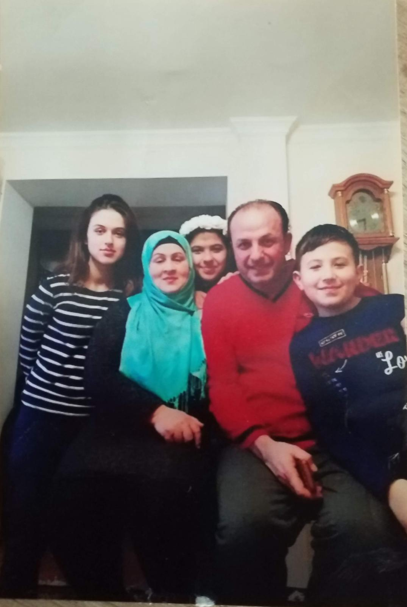

Hakkımda
Ben Salchuk Jafarlı, 1 Şubat 2008 tarihinde Azerbaycan’ın Bakü şehrinde doğdum. Doğma büyüme Azerbaycanlıyım. Küçük yaşlarda derslerim çok iyi gitmese de, iki ablamın üniversite kazanması bana büyük bir motivasyon oldu. Bu motivasyonla üniversite sınavına girdim ve TR-YÖS’te iyi bir puan alarak Sakarya Üniversitesi Bilgisayar Mühendisliği bölümüne yerleştim.
Mühendislik bölümünü seçme sebebim, Kocaeli Üniversitesi 4. sınıf Bilişim Sistemleri Mühendisliği okuyan ablamın yaptığı projeler ve stajların beni etkilemesiydi. Ayrıca diğer ablam da Malmö University'de yüksek lisans yapıyor ve Computational Materials Science (Hesaplamalı Malzeme Bilimi) alanında eğitim alıyor. Onların çalışmaları ve başarıları beni motive etti ve mühendislik bölümünü seçmemde önemli bir rol oynadı.
Sakarya Üniversitesi Bilgisayar Mühendisliği bölümünde eğitim alıyorum. Üniversite hayatında derslerime adapte olmaya ve bölümümü daha iyi tanımaya çalışıyorum. Zamanla yazılım alanında kendimi geliştirmek, yeni şeyler öğrenmek ve tecrübe kazanmak istiyorum. Üniversite sürecinde hem akademik hem de kişisel olarak gelişmenin önemli olduğunu düşünüyorum. Farklı insanlarla tanışmak ve yeni bir şehirde yaşamak bana farklı deneyimler kazandırdı. Bu süreçte daha sorumluluk sahibi olmayı ve kendi ayaklarım üzerinde durmayı öğreniyorum.

Aile fotoğrafı
Hobiler ve Etkinlikler
Yazılım
C#, .NET ve web teknolojileriyle aktif olarak uğraşıyor, kendimi sürekli geliştiriyorum.
Oyun
"Mobile Legends Bang Bang" oyuncusuyum. Strateji ve takım koordinasyonu kurmayı seviyorum.
Müzik
Pop ve güncel müzikleri yakından takip ediyorum. Özellikle Sabrina Carpenter gibi sanatçıları ve "Tears" gibi parçaları dinlemeyi seviyorum.